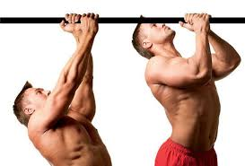

mini
BLOG
1.0
Photo gallery
H
ome
Privacy policy
Terms and Conditions
Photo gallery
Contacts
Menu
Dominadas sin barra: 3 alternativas que FUNCIONAN – Snap .
Cómo aprender a hacer dominadas con 6 ejercicios .
Descubre que tipos de dominadas existen - Ejercicios En Casa
¿Quieres mejorar en tus dominadas?¿Sabes que agarre es .
3 formas de hacer más dominadas - wikiHow
DOMINADAS | Técnica, Demostración, Agarres y Estancamiento
Cómo hacer las dominadas más eficientes - Las mejores .
Ejercicio de dominadas con distintos agarres: qué músculos .
Dominadas: una barra y 6 ejercicios es lo único que necesitas .
Tipos de Dominadas y Variaciones que puedes hacer en tu .
Check it out!
Dominadas sin barra: 3 alternativas que FUNCIONAN – Snap .
Cómo aprender a hacer dominadas con 6 ejercicios .
Descubre que tipos de dominadas existen - Ejercicios En Casa
¿Quieres mejorar en tus dominadas?¿Sabes que agarre es .
3 formas de hacer más dominadas - wikiHow
DOMINADAS | Técnica, Demostración, Agarres y Estancamiento
Cómo hacer las dominadas más eficientes - Las mejores .
Ejercicio de dominadas con distintos agarres: qué músculos .
Dominadas: una barra y 6 ejercicios es lo único que necesitas .
Tipos de Dominadas y Variaciones que puedes hacer en tu .
Photo gallery

<div class="mc_vtvc_th b_canvas"><div class="cico" style="width:234px;height:131px;"><div class="rms_iac" style="height:131px;line-height:131px;width:234px;" data-height="131" data-width="234" data-alt="DOMINADAS: 15 SECRETOS PARA EL MÁXIMO RENDIMIENTO" data-role="presentation" data-class="rms_img" data-src="https://tse4.mm.bing.net/th?id=OVP.9lhDXBqAny3h_eiucAgv-QEsDh" frameborder="0" allow="accelerometer; autoplay; encrypted-media; gyroscope; picture-in-picture" allowfullscreen>
Posted
28 Comments